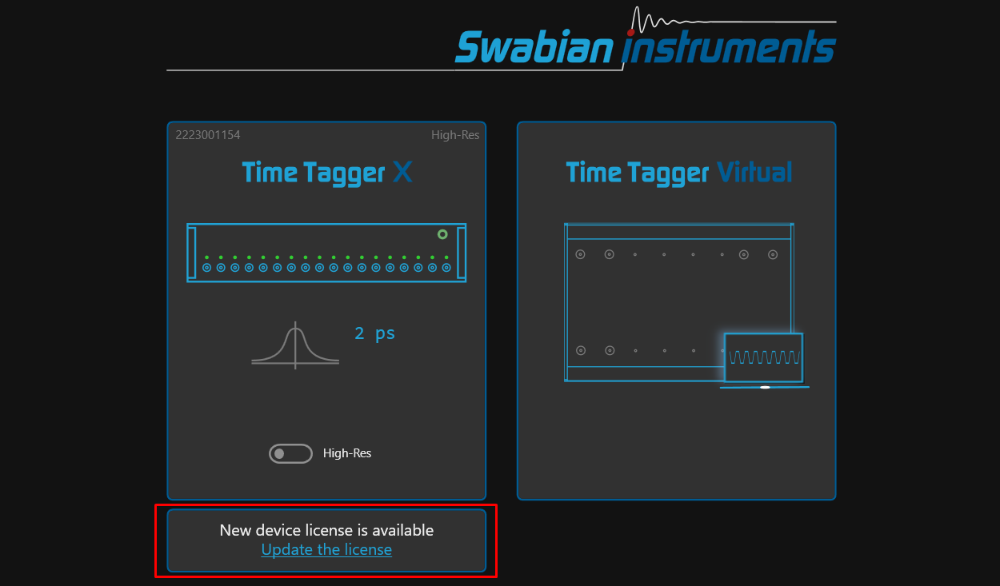
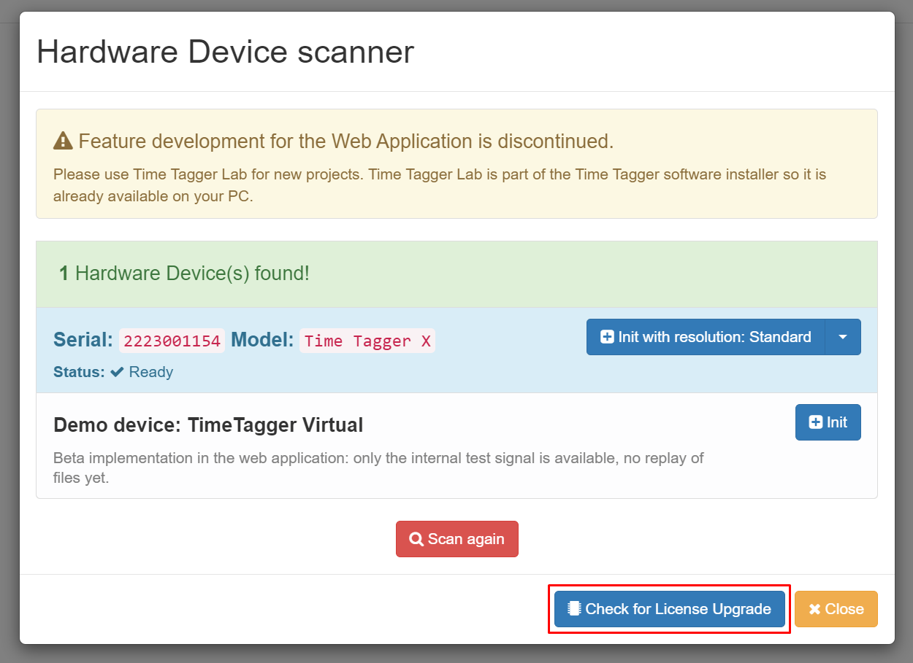
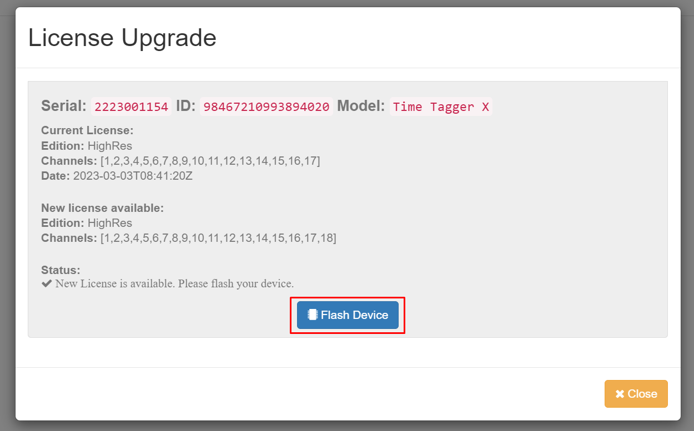
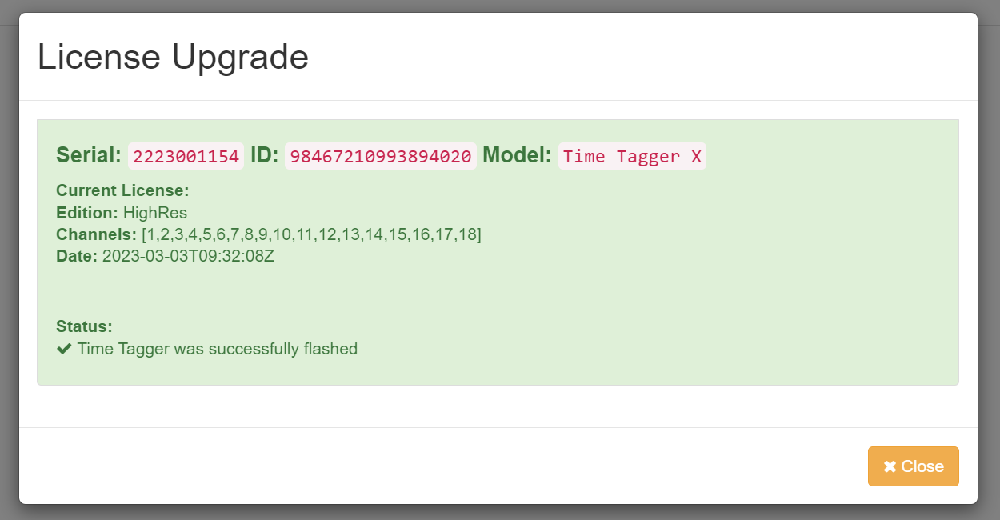

Installation instructions
Windows
Supported versions
Windows Windows 10 or higher is required. We provide separate Windows installers for 32 and 64 bit systems.
Installation
Download the installer from our downloads site.
Run the installer and follow the instructions.
Connect your Time Tagger.
Make sure that your computer is connected to the internet once you run the Time Tagger software. The software needs to request its license from our server. Once the license is transferred, no internet connection is required anymore.
Linux
Installation
Download and install the package for your Linux distribution from the Time Tagger downloads page https://www.swabianinstruments.com/time-tagger/downloads/.
The package installs the Python and C++ libraries for amd64 systems, including example programs.
- Graphical user interface (Web Application):
Launch via
timetaggerfrom the console or the application launcher.
Known issues
In case you have installed a previous version of the Time Tagger software, please reset the cache of your browser.
Closing the Web Application server may cause an error message to appear.
Time Tagger with Python
Install NumPy (e.g.
pip install numpy), which is required for the Time Tagger libraries.The Python libraries are installed in your default Python search path:
/usr/lib/pythonX.Y/dist-packages/or/usr/lib64/pythonX.Y/site-packages/.The examples can be found within the
/usr/lib/timetagger/examples/python/folder.
You can compile a Python module for custom Python installations in the following way:
The source of the Python wrapper _TimeTagger.cxx is provided in /usr/lib64/pythonX.Y/site-packages/.
For building the wrapper, the GNU C++ compiler and the development headers of Python and numpy need to be installed.
The resulting _TimeTagger.so and the high-level wrapper TimeTagger.py relay the Time Tagger C++ interface to Python.
PYTHON_FLAGS="`python3-config --includes --libs`"
NUMPY_FLAGS="-I`python3 -c \"print(__import__('numpy').get_include())\"`"
TTFLAGS="-I/usr/include/timetagger -lTimeTagger"
CFLAGS="-std=c++17 -O2 -DNDEBUG -fPIC $PYTHON_FLAGS $NUMPY_FLAGS $TTFLAGS"
g++ -shared _TimeTagger.cxx $CFLAGS -o _TimeTagger.so
Time Tagger with C++
The examples can be found within the
/usr/lib/timetagger/examples/cpp/folder.The header files can be found within the
/usr/include/timetagger/folder (-I /usr/include/timetagger).The assembly shall be linked with
/usr/lib/libTimeTagger.so(-l TimeTagger).
The C++ interface will likely also work on other distributions out of the box.
Hardware license upgrades
The Time Tagger Ultra and Time Tagger X have a hardware license that can be upgraded. To upgrade your license, please get in touch with sales@swabianinstruments.com. Additional channels and features can be activated. After purchasing a license upgrade, the new license will be available within minutes. You can install your new license using one of the graphical user interfaces.
Time Tagger Lab
Connect the Time Tagger to your PC
Start Time Tagger Lab
If a new license is available, you will see the following:
Click on “Update the license”. The new license will be applied immediately and you will see:

Web Application
Connect the Time Tagger to your PC
Start the Time Tagger WebApplication
Click on “Add Time Tagger” in the top left corner
You should see your connected Time Tagger and at the bottom the button “Check for License Upgrade” (the serial number should be different)
Click on “Check for License Upgrade”
If a new license is available, you will see the following:
If you want to activate the new license, please click “Flash Device” and wait until the process is complete. You will see the following message:
